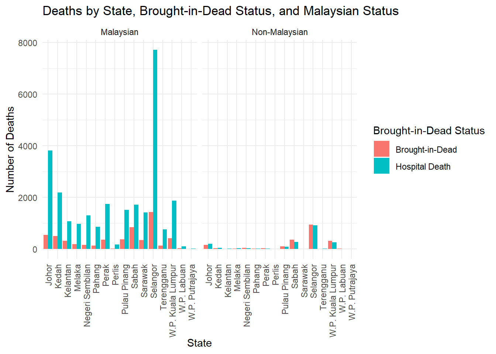

── Attaching core tidyverse packages ──────────────────────── tidyverse 2.0.0 ──
✔ dplyr 1.1.2 ✔ readr 2.1.4
✔ forcats 1.0.0 ✔ stringr 1.5.0
✔ ggplot2 3.4.2 ✔ tibble 3.2.1
✔ lubridate 1.9.2 ✔ tidyr 1.3.0
✔ purrr 1.0.1
── Conflicts ────────────────────────────────────────── tidyverse_conflicts() ──
✖ dplyr::filter() masks stats::filter()
✖ dplyr::lag() masks stats::lag()
ℹ Use the conflicted package (<http://conflicted.r-lib.org/>) to force all conflicts to become errors
Loading required package: rio
Loading required package: here
here() starts at C:/R/nih_training/StatsComputingR_sbdr2023
Loading required package: ggforce
#call in datac19_df <-read.csv("https://raw.githubusercontent.com/MoH-Malaysia/covid19-public/main/epidemic/linelist/linelist_deaths.csv")
Task 1: Scatterplots
Call the data in
Create a new variable vaccinated that indicates if an individual is fully vaccinated (dose2) or not. (Tip: use mutate and ifelse)
Plot a scatterplot showing the relationship between age and date. Use the new variable vaccinated variable to color the points using the colour hex #1369FF and #00B556. (Tip: Use the command scale_colour_manual)
Next try using the date_dose3 instead of date. Anything interesting?
Warning: There was 1 warning in `mutate()`.
ℹ In argument: `across(where(is.character), na_if, "")`.
Caused by warning:
! The `...` argument of `across()` is deprecated as of dplyr 1.1.0.
Supply arguments directly to `.fns` through an anonymous function instead.
# Previously
across(a:b, mean, na.rm = TRUE)
# Now
across(a:b, \(x) mean(x, na.rm = TRUE))
Group by state and brand2 and summarise the number of groups in each brand, state
Plot a box plot on the distribution of deaths by brand2
Title should be “Number of Deaths by Vaccine Brand and Date” with x-axis labels of “Vaccine Brand” and y-axis labels of “Number of Deaths” (Tip: Use labs)
Solution:
c19_df <-read.csv("https://raw.githubusercontent.com/MoH-Malaysia/covid19-public/main/epidemic/linelist/linelist_deaths.csv")c19_df <- c19_df %>%mutate(brand2 =replace_na(brand2, "Unvax")) %>%filter(brand2 %in%c("AstraZeneca", "Pfizer", "Sinovac", "Unvax")) %>%group_by(state, brand2) %>%summarise(deaths =n(), .groups ="drop")boxplot_plot <-ggplot(c19_df) +geom_boxplot(aes(x = brand2, y = deaths, col=brand2)) +labs(x ="Vaccine Brand", y ="Number of Deaths", title ="Number of Deaths by Vaccine Brand and Date") +theme_minimal()boxplot_plot
Task 4: Bar chart
Call in data
Select on state, malaysian, bid
Factorise the variable
Build a grouped bar chart by state and bid status
Facet wrap by malaysian
Title should be “Deaths by State, Brought-in-Dead Status, and Malaysian Status” with x-axis labels of “State” and y-axis labels of “Number of Deaths”. Legend label should be “Brought-in-Dead Status”.
Apply theme_minimal and adjust the x-axis text to be perpendicular (90 degrees) to the axis (Tip: Use theme (axis.text.x=element_text()))
What should you change to transform this into a stacked bar chart?
Solution:
c19_df <-read.csv("https://raw.githubusercontent.com/MoH-Malaysia/covid19-public/main/epidemic/linelist/linelist_deaths.csv")c19_df <- c19_df %>%mutate(malaysian =if_else(malaysian ==1, "Malaysian", "Non-Malaysian"),bid =if_else(bid ==1, "Brought-in-Dead", "Hospital Death")) %>%mutate(across(c(malaysian, bid), factor)) # Convert these columns to factors# Create the grouped bar chartbar_plot <-ggplot(c19_df, aes(x = state, fill = bid)) +geom_bar(position ="dodge") +facet_wrap(~malaysian) +labs(x ="State", y ="Number of Deaths", title ="Deaths by State, Brought-in-Dead Status, and Malaysian Status",fill ="Brought-in-Dead Status") +theme_minimal() +theme(axis.text.x =element_text(angle =90, vjust =0.5, hjust=1)) # Rotate x-axis labels for better visibilitybar_plot

#question 8 remove position=dodge
Task 5: Save plots
Easy peasy lemon squesy- just save all of the above 4 plots. (Tip: use ggsave())